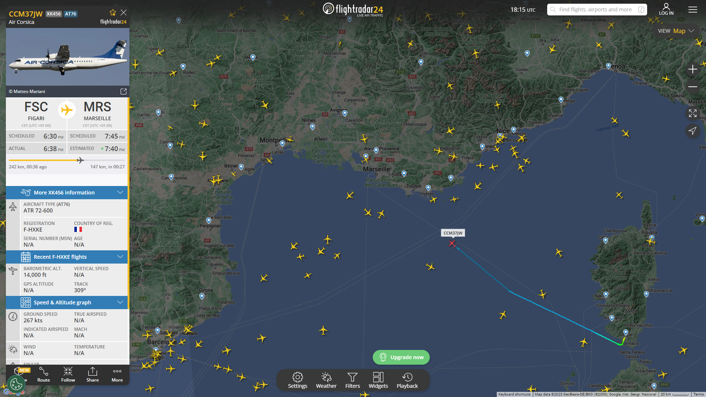

-
Suivi en Temps Réel :
Strava vous permet de suivre et d'enregistrer vos activités physiques, que ce soit la course à pied, le vélo, la natation, la randonnée ou d'autres sports. Vous pouvez utiliser votre smartphone ou une montre connectée pour enregistrer vos performances.
-
Détails des Vols :
L'application fournit des données détaillées sur vos activités, y compris la distance parcourue, la vitesse, l'élévation, les calories brûlées et bien plus encore. Vous pouvez suivre votre progression au fil du temps.
-
Informations sur les Aéroports :
Strava vous permet de définir des objectifs personnels pour vous motiver. Vous pouvez également participer à des défis communautaires pour relever des challenges.
-
Filtres et Notifications :
Vous pouvez suivre d'autres athlètes, commenter leurs activités, les encourager et partager vos propres réalisations. Strava crée une communauté de sportifs partageant les mêmes intérêts.
-
Exploration du Trafic Aérien :
Strava propose des segments de parcours où vous pouvez comparer vos performances avec celles d'autres athlètes. Vous pouvez même essayer de décrocher le titre de "Roi ou Reine du Segment" pour les segments populaires.
-
Replay des Vols :
Strava propose des plans d'entraînement personnalisés pour vous aider à atteindre vos objectifs.
FlightRadar24
FlightRadar24 est une application fascinante pour les amateurs d'aviation et ceux qui s'intéressent au monde de l'aviation commerciale et privée. Voici une description complète de ses fonctionnalités :
Un exemple de l'appli
FlightRadar24 offre une perspective captivante sur l'aviation en direct et permet aux passionnés d'aviation de suivre les vols, de découvrir de nouveaux itinéraires et de s'informer sur l'ensemble du secteur aéronautique.
Ces trois applications offrent des fonctionnalités riches et sont conçues pour répondre aux besoins de différents utilisateurs, que ce soit pour la météo, le sport ou l'aviation. Profitez de leur utilisation pour tirer le meilleur parti de vos activités et de vos intérêts.